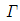
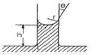
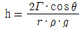
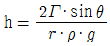
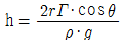
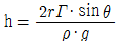
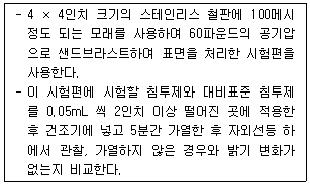
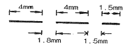
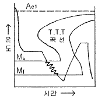
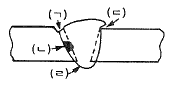

침투비파괴검사기사(구) (2007-03-04 기출문제)
1과목: 침투탐상시험원리
1. 다음 중에서 일반적으로 결함검출감도가 가장 낮은 형광침투제는?
- 용제제거성 형광침투제
- 후유화성 형광침투제
- 수세성 형광침투제
- 후유화성 이원성 형광침투제
(정답률: 알수없음)

2. 침투제에 들어 있는 형광염료는 365cm에서 광자 에너지를 흡수하여 황록색의 빛을 발산한다. 이 때 형광 염료가 발산하는 가시스펙트럼의 파장으로 적당한 것은?
- 365mm
- 425mm
- 525mm
- 625mm
(정답률: 알수없음)
3. 알루미늄 합금의 A형 대비시험편을 재사용하거나 보관할 때의 세척처리 방법으로 옳지 않은 것은?
- 유기 용제에 의한 증기세척
- 유기 용제에 의한 침적법
- 유지 용제를 이용한 초음파세척
- 유기용제에 의한 산세척
(정답률: 알수없음)
4. 다음 침투탐상시험 중 현상제의 선택이 가장 적절한 것은?
- 염색침투액과 함께 건식현상제를 사용한다.
- 대형 부품의 전체면 검사에 습식현상제를 사용한다.
- 표면이 거친 시험제에 속건식현상제를 사용한다.
- 야외에서 국부의 용접부 검사에 속건식현상제를 사용한다.
(정답률: 알수없음)
5. 침투액이 결함 내부로 침투되는 성질과 가장 관계가 깊은 용어는?
- 높은 점도
- 적심성
- 화학적 불활성
- 비중
(정답률: 알수없음)
6. 보관이나 기타의 조건으로 인해 침투제의 형광성능을 평가할 경우 통상적으로 어떤 결과를 비료하는가?
- 지시에서 발산되는 실제 빛의 양을 조도계로 측정
- 재료를 형광화 하는데 소요되는 자외선의 양을 강도계로 측정
- 다른 침투제와 비교하여 형광물질에서 발산되는 빛의 상대량을 육안으로 관차
- 주위에서 발산되는 빛과 비교하여 형광물질에서 발산되는 빛의 상대량을 로그 그래프로 비교
(정답률: 알수없음)
7. 다음 중 자분탐상시험의 신뢰성이 침투탐상시험보다 우수한 경우는?
- 단면 급변부
- 이종 재질의 경계면
- 운전 중 발생한 미세한 표면균열
- 알루미늄 용접부의 표면 기공
(정답률: 알수없음)
8. 후유화성 침투액을 세척처리하려고 한다. 다음 중 옳지 않은 방법은?
- 물에 적신 헝겊을 사용해서 침투액을 제거한다.
- 분무법으로 침투액을 제거한다.
- 형광 침투액의 경우 자외선을 조사시켜 세척 정도를 확인하며 제거한다.
- 세척을 시작한 후 중단하지 않고 단시간에 신속하게 하는게 좋다.
(정답률: 알수없음)
9. 침투탐상시험 중 미세한 피로균열의 탐상에 가장 적합한 방법은?
- 수세성 형광침투탐상
- 후유화성 형광침투탐상
- 속건식 염색침투탐상
- 후유화성 염색침투탐상
(정답률: 알수없음)
10. 고강도 강에 화학적인 에칭으로 전처리를 수행해야 하는 경우 시험체를 적절한 온도에서 1시간 이상 가열한 후 에칭처리를 해야 하는 이유로 가장 옳은 것은?
- 피클링(Pickling)을 하기 위해
- 수소취성을 피하기 위해
- 알카리 세척을 하기 위해
- 할로겐 화합물과의 반응을 줄이기 위해
(정답률: 알수없음)
11. 다음 중 구상흑연 주철의 구상화율 정도의 파악에 활용되는 비파괴검사법은?
- 자분탐상시험
- 침투탐상시험
- 방사선투과시험
- 초음파탐상시험
(정답률: 알수없음)
12. 다음 누설검사 방법 중 검출감도가 가장 낮은 것은?
- 진공상자법-기포누설검사
- 가압법-헬륨 누설검사
- 할로겐 누설검사
- 가압법-암모니아 누설검사
(정답률: 알수없음)
13. 그림과 같이 양끝이 개방되어 있는 모세관을 액체 속에 세워 놓았을 때 관에 액체가 올라간 높이를 구하는 식으로 옳은 것은? (단, h는 액체가 올라간 높이, r은 모세관의 반경, ρ는 액체의 밀도, g는 중력가속도,

는 표면장력, θ는 접촉각이다.)




(정답률: 알수없음)
14. 침투탐상시험시 끼워 맞춤, 키홈, 리벳이음 등 조립된 부품 사이의 틈새에 의해 발생한 지시모양을 무엇이라 하는가?
- 무관련지시
- 선형지시
- 결함지시
- 원형상지시
(정답률: 알수없음)
15. 다음 중 침투탐상시험으로 탐상하기 어려운 제품은?
- 알루미늄 단조품
- 주강품
- 흡수성 세라믹 제품
- 유지제품
(정답률: 알수없음)
16. 와전류탐상시험의 종류와 특징에 대한 설명으로 옳은 것은?
- 자분탐상검사와 함께 강자성체의 탐상만 가능하다.
- 검사에서 얻은 지시로 결함의 종류, 형상 및 크기를 정확히 판별할 수 있다.
- 검사대상 외의 재료의 영향에 의한 잡음이 검사를 방해하는 경우가 있다.
- 관, 선, 환봉 등에 대한 자동화 탐상과 고온에서의 탐상이 곤란하다.
(정답률: 알수없음)
17. 품질관리를 위한 탐상제의 점검 중 건식현상제는 일반적으로 어떻게 점검하는 것이 효율적인 방법인가?
- 보통 육안으로 이물질의 혼입이 없는지 등을 점검한다.
- 농도와 비중을 측정하여 점검한다.
- 용해시켜 침투제 오염 여부를 점검한다.
- 굴추계를 이용하여 규정치 내에 있는지 점검한다.
(정답률: 알수없음)
18. 다음 중 수세성 형광침투탐상시험에서 시험편이 적절히 세척되었는지 확인하는 방법으로 가장 중요한 사항은?
- 시험편의 표면을 문질러 본다.
- 세척 주기를 일정하게 한다.
- 고압의 물로 분사시켜 본다.
- 자외선등 밑에서 세척한다.
(정답률: 알수없음)
19. 침투탐상시험에 이용되는 침투제의 물리적 특성인 적심성(wetting ability)은 무엇을 측정하면 알 수 있는가?
- 비중(specific gravity)
- 표면장력(surface tension)
- 접촉각(contact angle)
- 점성(viscosity)
(정답률: 알수없음)
20. 다음 중 윙크자이글로(wink zyglo)는 어느 현상법과 가장 밀접한 관계가 있는가?
- 무현상법
- 건식현상법
- 습식현상법
- 속건식현상법
(정답률: 알수없음)
2과목: 침투탐상검사
21. 유후화성 형광침투탐상검사시 세척단계에서 과잉세척을 막아줄 수 있는 방법으로 가장 적절한 것은?
- 침투제가 완전히 유화되기 전에 세척한다.
- 침투제가 완전히 유화된 후에 세척한다.
- 과잉침투제가 제거되자마자 세척작업을 중단한다.
- 110℃ 이상의 고온으로 세척한다.
(정답률: 알수없음)
22. 침투제의 형광은 자외선등 아래에 오랜 동안 노출되었을 때와 시험체의 표면온도가 높을 때 특성이 나빠진다. 이에 대한 검사 중 다음은 어떤 성능시험에 대한 설명인가?

- 형광 밝기 시험
- 자외선등 하에서의 형광안정성 시험
- 고온 금속판에서의 형광안정성 시험
- 형광 얼룩 반점 시험
(정답률: 알수없음)
23. 침투탐상검사에서 주조물 표면상에 나타나는 콜드셧에 의한 결함모양 표시는?
- 굵은 점선
- 작은 결함이 포도송이처럼 모인 구멍
- 불연속의 폭이 좁고 깊이는 얕은 선형지시
- 굵고 예리한 그물 형태
(정답률: 알수없음)
24. 다음 중 침투탐상검사에 나타난 의사지지의 원인인 것은?
- 가스 구멍
- 주조품 표면의 탕계
- 검사원의 손에 묻은 침투액
- 주조품의 핀홀
(정답률: 알수없음)
25. 침투탐상검사시 미세한 터짐이나 폭이 넓고 얕은 터짐에 가장 검출 성능이 우수한 시험 방법은?
- 수세성 형광침투탐상시험
- 후유화성 형광침투탐상시험
- 용제 제거성 형광침투탐상시험
- 수세성 형광침투탐상시험
(정답률: 알수없음)
26. 산화마그네슘, 산화칼슘, 산화티탄 등의 백색 미분말을 알코올류에 현탁하고 분산제를 첨가하여 만든 현상제는?
- 건식 현상제
- 속건식 현상제
- 습식 현상제
- 수용성 현상제
(정답률: 알수없음)
27. 다음 중 침투탐상검사 후에 탐상결과의 하나인 침투지시모양을 영구적으로 보관하는데 효과적인 현상제는?
- 휘발성 용제 현상제
- 플라스틱 필름 현상제
- 분말 현상제
- 수용성 현상제
(정답률: 알수없음)
28. 침투제와 유화제의 비중 측정에 사용되는 계측기는?
- Hydrometer
- Viscometer
- U.V. meter
- Photofluorometer
(정답률: 알수없음)
29. 다음 침투탐상검사 중 대형 구조물의 부분 검사에 가장 적합하게 사용할 수 있는 탐상방식의 올바른 처리과정은?
- 전처리 → 침투처리 → 유화처리 → 세척처리 → 현상처리 → 건조처리 → 관찰 → 후처리
- 전처리 → 침투처리 → 제거처리 → 현상처리 → 관찰 → 후처리
- 전처리 → 침투처리 → 세척처리 → 건조처리 → 유화처리 → 관찰 → 후처리
- 전처리 → 침투처리 → 제거처리 → 건조처리 → 관찰 → 후처리
(정답률: 알수없음)
30. 알루미늄 단조품에 대한 균열을 찾고자 침투탐상검사를 실시할 때 표준 온도에서 추천된 최소한의 침투시간은 얼마인가?
- 1분
- 3분
- 7분
- 10분
(정답률: 알수없음)
31. 수현탁성 현상제를 사용하는 것은 분말 현상제를 사용하는 것보다 건조과정의 시간은 더 걸리나 작은 균열에 대하여 더 좋은 탐상감도를 나타낸다. 그 주된 이유는?
- 분말 현상제보다 수현탁성 현상제가 분해력이 좋으므로
- 분말 현상제보다 수현탁성 현상제가 입자가 더 작기 때문에
- 분말 현상제보다 수현탁성 현상제가 표면에 더 잘 도포되므로
- 건조하는 과정에서 현상제와 시험면이 잘 밀착되어서 결함에 침투해 있던 침투액에 더욱 밀착되므로
(정답률: 알수없음)
32. 침투탐상검사에 나타난 결함의 형태 중에서 점상이 아닌 것은?
- 핀홀(Pin Hole)
- 조대입자(Coarse Grains)
- 수축공(Shrinkage Cavity)
- 늘어남(Elongation)
(정답률: 알수없음)
33. 침투탐상검사에서 탐상제를 적용하는 방법 중 유독 붓칠법을 사용하지 않도록 주의를 해야 하는 공정은?
- 침투제 적용
- 유화제 적용
- 현상제 적용
- 과잉침투제 제거
(정답률: 알수없음)
34. 다음 여러 종류의 현상에 따른 탐상법을 설명한 것으로 올바르지 않은 것은?
- 백색미분의 건식현상제 적용 : 후유화성 형광, 수세성 형광 침투탐상검사와 조합해서 적용하는 경우가 많다.
- 현상제를 물에 분산시킨 습식현상제 적용 : 수세성 침투탐상검사와 조합해서 적용하는 경우가 많다.
- 휘발성 유기용제에 분산시킨 현상제 적용 : 후유화성 염색, 수세성 염색 침투탐상검사와 조합해서 적용하는 경우가 많다.
- 무현상법 적용 : 세척처리를 한 후 현상제를 적용하지 않고 관찰하는 방법이다.
(정답률: 알수없음)
35. 검사감도는 높지 않지만 결함지시를 확대하여 관찰하기 위한 목적으로 고안된 것으로, 침투제와 표면장력이 다른 휘발성 용제에 염료를 용해시켜 이 용제를 시험면에 흘리면 이미 결함 속에 침투된 침투제가 결함 주위에 이 용제가 모이는 것을 방해하여 결함 주위만 착색되는 현상을 이용하는 검사 방법을 무엇이라 하는 가?
- 에칭법
- 입자여과법
- 분말침투법
- 브레이킹 필름법
(정답률: 알수없음)
36. 침투탐상검사에서 침투액이 결함으로의 침투능력에 대한 설명으로 잘못된 것은?
- 시험체의 온도가 낮을수록 침투시간이 길어진다.
- 결함의 종류에 따라 침투능력이 다르다.
- 전처리시 사용된 세척액은 결함 내에 남아 있어야 침투액과 혼합되어 성능이 좋아진다.
- 전처리시 오염 등이 제거되어야 침투액의 성능이 높아질 수 있다.
(정답률: 알수없음)
37. 다음 중 침투탐상검사를 적용할 때에 고려할 사항으로 거리가 가장 먼 것은?
- 검출할 결함의 종류 및 크기
- 검사에 사용되는 장치
- 제품의 제조 형태
- 검사품의 두께와 형태
(정답률: 알수없음)
38. 다음 침투탐상검사 공정 중 배액처리 시설이 필요한 처리과정들로만 조합된 것은?
- 전처리, 침투처리
- 세척처리, 건조처리
- 건조처리, 건식현상처리
- 침투처리, 습식현상처리
(정답률: 알수없음)
39. 용접에 의한 압력용기류 등의 제조시에 침투탐상검사를 할 때의 설명으로 잘못된 것은?
- 용접공정 중의 탐상시기는 용접 전, 중, 후 3단계로 구분하여 실시할 수 있다.
- 일반 강재인 경우 용접완료 후 상온으로 냉각된 후 시험을 실시토록 한다.
- 고장력강인 경우 용접이 완료된 후 수소취화에 의해 지연균열이 발생할 수 있어 탐상시기는 1일 정도 경과 후 실시토록 한다.
- 퀜칭 및 템퍼링 한 고강력 강재인 경우 탐상시기는 용접이 완료된 직후 실시하도록 한다.
(정답률: 알수없음)
40. 침투제나 용제에 함유된 왕의 함량은 제한되는데 이러한 침투제나 용제를 사용할 때 특별히 제한하는 시험체는?
- 알루미늄합금
- 니켈합금
- 마그네슘합금
- 동합금
(정답률: 알수없음)
3과목: 침투탐상관련규격
41. 항공우주용 기기의 침투탐상 검사 방법(KS W 0914)에서 수세성 침투액 제거시 자동스프레이에 의한 세척 제원의 수온으로 적합하지 않은 것은?
- 7℃
- 17℃
- 27℃
- 37℃
(정답률: 알수없음)
42. 보일러 및 압력용기에 대한 표준 침투탐상검사(ASME Sec.V SE-165)에서 규정된 온도범위로 침투액을 적용할 경우 침투시간을 가장 길게 해야 하는 부품은?
- 황동 단조품의 균열
- 알루미늄 용접부의 균열
- 티타늄 용접부의 균열
- 강 용접부의 균열
(정답률: 알수없음)
43. 침투탐상 시험방법 및 침투지시모양의 분류(KS B 0816)에 의한 시험결과 3개의 선상침투지시모양이 그림과 같이 동일 선상에 연속해서 나타났다. 2개의 지시모양의 길이는 각각 4mm이고, 1개는 1.5mm로 측정되었을 때 홈 상호간의 거리가 각각 1.8mm, 1.5mm 이었다면 다음 설명 중 옳은 것은?

- 3개의 각기 다른 독립된 결함으로 간주한다.
- 연속한 1개의 결함으로 간주한다.
- 1.5mm 의 지시는 무시하고 각각 4m인 2개의 독립된 결함으로 간주한다.
- 4mm와 5.5mm 인 2개의 결함으로 간주한다.
(정답률: 알수없음)
44. 침투탐상 시험방법 및 침투지시모양의 분류(KS B 0816)에서 특별히 규정하지 않으면 후유화성 침투액의 세척은 어떤 방법으로 하도록 규정하고 있는가?
- 물로 세척한다.
- 용제로 세척한다.
- 유화제로 세척한다.
- 물과 유화제로 혼합하여 세척한다.
(정답률: 알수없음)
45. 항공우주용 기기의 침투탐상 검사 방법(KS W 0914)에서 침투액의 적용시 특별한 지시가 없는 한 침투액의 체류 시간은 최소 얼마 이상인가?
- 3분
- 5분
- 10분
- 30분
(정답률: 알수없음)
46. 보일러 및 압력용기에 대한 표준 침투탐상검사(ASME Sec.V SE-165)에 따라 수세성 침투탐상시험시 별도의 규정이 없을 때 과잉침투제 제거를 위한 수세용 수압과 수세 시간은 얼마를 초과하지 않도록 규정하고 있는가?
- 30psi, 60초
- 30psi, 120초
- 40psi, 60초
- 40psi, 120초
(정답률: 알수없음)
47. 보일러 및 압력용기에 대한 표준 침투탐상검사(ASME Sec.V SE-165)에서 사용되는 용제 세척제의 성분 함량을 제한하는 원소는?
- 수소(H)
- 붕소(B)
- 탄소(C)
- 염소(Cl)
(정답률: 알수없음)
48. 보일러 및 압력용기에 대한 표준 침투탐상검사(ASME Sec.V SE-165)에서 규정한 침투탐상시험 방법의 분류이다. 옳은 것은?
- 염색침투탐상시험의 방법 A - 후유화성(기름베이스)
- 염색침투탐상시험의 방법 B - 후유화성(물베이스)
- 형광침투탐상시험의 방법 C - 용제제거성
- 형광침투탐상시험의 방법 D - 수세성
(정답률: 알수없음)
49. 침투탐상 시험방법 및 침투지시모양의 분류(KS B 0816)에 따라 다음 중 독립하여 존재하는 결함에 분류되지 않은 것은?
- 갈라짐
- 선상 결함
- 방사상 흠
- 원형상 결함
(정답률: 알수없음)
50. 침투탐상 시험방법 및 침투지시모양의 분류(KS B 0816)에 규정한 “용제제거성 염색침투액 - 속건식현상법”의 시험 절차를 바르게 나타낸 것은?
- 전처리 - 침투처리 - 건조처리 - 현상처리 - 관찰 - 후처리
- 전처리 - 침투처리 - 후처리 - 현상처리 - 관찰 - 수세처리
- 전처리 - 침투처리 - 제거처리 - 현상처리 - 관찰 - 후처리
- 전처리 - 침투처리 - 건조처리 - 후처리 - 관찰 - 현상처리
(정답률: 알수없음)
51. 항공우주용 기기의 침투탐상 검사 방법(KS W 0914)에서 사용 중인 탱크 내의 침투액은 표준 침투액과 비교하여 감도를 확인, 점검하여야 한다. 탱크 내에 침투액을 보충할 필요가 없는 경우 사용 중인 침투액의 점검 주기는 어떻게 규정하고 있는가?
- 적어도 주마다 1회
- 적어도 2주마다 1회
- 적어도 월 1회
- 적어도 년 1회
(정답률: 알수없음)
52. 강제 석유저장탱크으 구조(KS B 6225)에 대한 침투탐상 시험에 관한 설명이다. 옳은 것은?
- 용제제거성 염색침투액과 속건식 현상제를 조합해서 시험하는 것을 원칙으로 한다.
- 시험실시 범위는 지그 부착 자리의 주변에서 그 바깥부분으로 최소 2mm 이상의 길이를 더한 범위로 한다.
- 침투액의 분무시 시험체 표면을 침투액으로 5분 이상 적셔 두어야 한다.
- 원칙적으로 현상제를 적용시키고 나서 5분 후에 관찰을 한다.
(정답률: 알수없음)
53. 보일러 및 압력용기에 대한 침투탐상검사(ASME Sec.V Art.6)에서 표준으로 하는 침투제 및 검사체 표면의 온도 범위로 알맞은 것은?
- 10°F ~ 20°F
- 25°F ~ 50°F
- 50°F ~ 125°F
- 110°F ~ 225°F
(정답률: 알수없음)
54. 보일러 및 압력용기에 대한 침투탐상검사(ASME Sec.V Art.6)에서 규정한 “지시모양의 평가”이 설명으로 옳은 것은?
- 모든 지시는 참조 규격의 합격기준에 따라 평가한다.
- 모든 원형지시는 합격으로 평가한다.
- 모든 무관련지시는 합격으로 평가한다.
- 모든 선형지시는 불합격으로 평가한다.
(정답률: 알수없음)
55. 보일러 및 압력용기에 대한 표준 침투탐상검사(ASME Sec.V SE-165)에 규정한 자외선등의 설명으로 잘못된 것은?
- 자외선등의 파장범위는 320nm~380nm이다.
- 자외선등의 최소 예열시간은 10분이다.
- 자외선등의 필터점검은 매일 한다.
- 자외선등의 시험체 표면 최소 밝기는 500μW/cm2이다.
(정답률: 알수없음)
56. 일반적으로 인터넷의 주소체계 중 URL 주소의 구성 순서는?
- 프로토콜 + 파일명 + 호스트명 + 디렉토리
- 프로토콜 + 호스트명 + 디렉토리 + 파일명
- 호스트명 + 프로토콜 + 디렉토리 + 파일명
- 호스트명 + 디렉토리 + 프로토콜 + 파일명
(정답률: 알수없음)
57. 컴퓨터의 일반 주기억장치로 사용하며 전원이 공급 되어도 일정 시간이 지나면 내용이 지워지므로 재충전이 필요한 메모리를 무엇이라 하는가?
- EEPROM
- DRAM
- PROM
- EPROM
(정답률: 알수없음)
58. 단말 장치에서 발생하는 디지털 데이터를 전화선과 같은 아날로그 전송 매체를 통해 전송하기 위해서 디지털 데이터와 아날로그 전송신호 상호간에 변환 과정이 필요하다. 이러한 기능을 수행하는 기기를 무엇이라 하는가?
- 허브(HUB)
- 모뎀(Modem)
- LAN카드
- 라우터(Router)
(정답률: 알수없음)
59. 컴퓨터에 있어서 TCP와 UDP 등의 패킷 전달 서비스를 제공하며 경로 설정을 담당하는 것은?
- HTTP
- SMTP
- FTP
- IP
(정답률: 알수없음)
60. 글의 내용을 보충하기 위해 키보드 글자나 부호들의 짧은 나열을 이용하여 보통 얼굴 표정을 흉내내거나 느낌을 나타내어 인터넷 전자우편이나 채팅 그리고 메시지 등에 사용하는 문자 표현을 무엇이라 하는가?
- emoticon
- navigation
- banner
- prompt
(정답률: 알수없음)
4과목: 금속재료학
61. 순철(純鐵)을 850℃에서 930℃로 가열하였을 때 근접 원자간 거리와 원자(Fe)충전율의 변화로 옳은 것은?
- 길이는 증가하고, 충전율도 증가한다.
- 길이는 증가하고, 충전율은 감소한다.
- 길이는 감소하고, 충전율은 증가한다.
- 길이는 감소하고, 충전율도 감소한다.
(정답률: 알수없음)
62. 다음 중 주철을 접종처리하는 가장 큰 이유는?
- 기지조직을 조대화 하기 위해서
- 흑연형상의 개량을 방지하기 위해서
- 결정의 핵생성을 촉진하고 조직 및 성질을 개선하기 위해서
- 주철에서 chill화를 촉진하기 위해서
(정답률: 알수없음)
63. 재료에 어떤 일정한 하중을 가하고 어떤 온도에서 긴 시간 동안을 경과함에 따라 그 스트레인을 측정하여 각종 재료의 역학적 양을 결정하는 시험은?
- 피로시험
- 전단시험
- 인장시험
- 크리프시험
(정답률: 알수없음)
64. Fe-C 평형 상태도에서 3가지의 불변반응이 존재한다. 다음 중 존재하지 않는 불변반응은?
- 공정반응
- 공석반응
- 포정반응
- 포석반응
(정답률: 알수없음)
65. 100배로 확대된 다결정 금속재료의 내부조직 사진에서 평방인치당 결정립자의 수가 128개일 때 금속 재료의 ASTM 결정입도는?
- 2
- 4
- 6
- 8
(정답률: 알수없음)
66. 다음 중 마텐자이트 변태에 대한 설명으로 틀린 것은?
- 마텐자이트는 고용체의 단일상(單一想)이다.
- 오스테나이트와 마텐자이트 사이에는 일정한 방위 관계가 있다.
- 탄소강 및 질소강의 마텐자이트는 각각 C 및 N을 치환형으로 고용한 FCC 또는 CBT 구조를 가지며, 확산변태(擴散變態)를 한다.
- 마텐자이트 변태를 하면 표면기복(表面起伏)이 생기며, 협동적 원자운동에 의한 변태이다.
(정답률: 알수없음)
67. 베어링용 합금 중에서 고하중 고속전용 베어링으로 적합하며 주석계 화이트 메탈이라 불리우는 합금은?
- 오일라이트(oilite)
- 바이메탈(bimatal)
- 반메탈(bahn metal)
- 베빗메탈(babbit metal)
(정답률: 알수없음)
68. 오스테나이트계 스테인리스강의 응력 부식균열을 방지하기 위한 대책으로 틀린 것은?
- 고 Ni의 재료를 사용한다.
- 음극방식(양극으로는 AI을 용사한다.)을 한다.
- 압축응력을 없애기 위해 담금질 열처리한다.
- 사용환경 중의 염화물 또는 알칼리 제거한다.
(정답률: 알수없음)
69. 다음 열전대 중 가장 높은 온도를 측정할 수 있는 것은?
- 백금-백금·로듐
- 철-콘스탄탄
- 크로멜-알루멜
- 구리-콘스탄탄
(정답률: 알수없음)
70. 다음 그림과 같은 열처리 방법은?

- Austempering
- Marquenching
- Ausforming
- Martempering
(정답률: 알수없음)
71. 다음 중 탄소강에서 상온취성의 원인이 되는 화합물은?
- FeS
- Fe3C
- Fe3P
- MnS
(정답률: 알수없음)
72. 다음 중 탄소강에 합금원소를 첨가하는 목적으로 가장 관계가 먼 것은?
- 합금원소에 의한 기지의 고용강화를 위해서
- 내식성 및 내마모성을 향상시키기 위해서
- 미려한 표면 광택을 내기 위해서
- 고온 및 저온의 기계적 성질을 개선하기 위해서
(정답률: 알수없음)
73. 주조용 알루미늄 합금과 그에 따른 명칭이 틀린 것은?
- Al-Cu-Mg-Ni 합금 : 두랄루민(Durakumin)
- Al-Si계 합금 : 실루민(Silumin)
- Al-Mg계 합금 : 하이드로날륨(Hydronaliunm)
- Al-Si-Cu계 합금 : 라우탈(Lautal)
(정답률: 알수없음)
74. 다음 중 Cu-Zn합금에 관한 설명으로 옳은 것은?
- α의 결정형은 면심입방격자이며, β의 결정형은 체심입방격자이다.
- 공업용 사용하는 황동은 Zn이 최대 60% 이상 함유한다.
- 황동에서는 α, β, γ, δ, ε, η, θ 의 7개 상이 상태도에 나타난다.
- Cu에 Zn이 35%를 넘으면 β상이 나오므로 경도와 강도가 낮아진다.
(정답률: 알수없음)
75. 6 : 4 황동에 Sn을 넣은 것으로 복수기판, 용접봉 등에 이용되는 것은?
- Admiralty metal
- Naval brass
- Albrac bronze
- Hard brass
(정답률: 알수없음)
76. Mg 합금이 구조재료로 사용될 때의 특성이 아닌 것은?
- 기계가공성이 좋고 아름다운 절삭면이 얻어진다.
- 감쇠능(減衰能)이 주철보다 커서 우수한 소음 방지 구조재료로 사용된다.
- 고온에서 매우 활성적이고, 분말이나 절삭설은 발화의 위험이 있다.
- 소성가공성이 좋아 상온변형이 쉽다.
(정답률: 알수없음)
77. 원단면적이 20m2인 시편을 최대하중 3000kg으로 인장하였을 때, 파단직전의 단면적이 18m2이었다. 이 때의 단면수축율은 약 얼마인가?
- 10%
- 11%
- 12%
- 13%
(정답률: 알수없음)
78. 가공용 알루미늄합금의 질별기호 중 틀린 것은?
- F : 제조한 그대로의 것
- O : 노멀라이징한 것
- H : 가공경화한 것
- T : 열처리한 것
(정답률: 알수없음)
79. 온도가 일정한 조건의 3원계 금속 상태도에서 3상으로 공존할 때의 자유도는 얼마인가?
- 0
- 1
- 2
- 3
(정답률: 알수없음)
80. 다음 중 니켈(Ni) 및 니켈 합금에 대한 설명으로 틀린 것은?
- 내식성이 나쁘다.
- 열간 및 냉간가공이 쉽다.
- 가공성이 좋아 선, 관 등을 만든다.
- Cu에 10~30%Ni을 함유한 합금을 백동이라 한다.
(정답률: 알수없음)
5과목: 용접일반
81. 가동 철심형 아크 용접기의 특성 설명으로 틀린 것은?
- 광범위한 전류 조정이 어렵다.
- 미세한 전류 조정이 불가능하다.
- 누설자속의 가감으로 전류를 조정한다.
- 중간 이상 가동철심을 빼내면 누설자속의 영향으로 아크가 불안정하게 되기 쉽다.
(정답률: 알수없음)
82. 탄산가스 아크용접의 장점으로 틀린 것은?
- 솔리드 와이어를 이용한 용접법에서는 용제를 사용할 필요가 없다.
- 용접봉 갈아 끼우는 시간이 없어 용접작업 시간을 길게 할 수 있다.
- 가시(可視) 아크이므로 시공이 편리하다.
- 일반적으로 바람의 영향을 크게 받지 않는다.
(정답률: 알수없음)
83. 다음 중 다층 쌓기에 이용되는 용착법이 아닌 것은?
- 빌드업법
- 케스케이드법
- 스킵법
- 전진 블럭법
(정답률: 알수없음)
84. 티그 용접기 토치부품에서 가스 노즐(nozzle)의 재질은 일반적으로 다음 중 어느 것이 가장 적합한가?
- 세라믹(ceramic)
- 연강
- 텅스텐(tungsten)
- 고합금강
(정답률: 알수없음)
85. 탄산가스 아크용접 용극식에서 일반적으로 사용되는 보호가스가 아닌 것은?
- CO2 + O2
- CO2 + Ar
- CO2 + N2
- CO2 + Ar + O2
(정답률: 알수없음)
86. 피복아크 용접봉에서 사용되는 피복제 성분 중 아크 안정의 기능을 가지는 것은?
- 페로크롬
- 페로망간
- 산화니켈
- 규산칼륨
(정답률: 알수없음)
87. 주철(Cast Iron) 용접 시공시의 주의사항 설명 중 잘못된 것은?
- 가능한 한 직선 비드를 배치한다.
- 가는 직경의 용접봉을 사용한다.
- 비드 배치는 길게 한번에 끝낸다.
- 용입을 너무 깊게 하지 않는다.
(정답률: 알수없음)
88. 불활성가스 금속 아크용접에서 와이어(wire) 송급기구 중 작은 지름의 연한 와이어에 가장 적합한 것은?
- 푸시(push)식
- 풀(pull)식
- 푸시 풀(push pull)식
- 더블 푸시(double push)식
(정답률: 알수없음)
89. 서브머지드 아크 용접장치에서 전극형상에 따른 종류가 아닌 것은?
- 와이어(wire) 전극
- 테이프(tape) 전극
- 대상(hoop) 전극
- 대차(carriage) 전극
(정답률: 알수없음)
90. 다음 그림과 같은 수평자세 V형 홈 이음 용접에서 있어서 언더컷은 어느 부분을 말하는가?

- (ㄱ)
- (ㄴ)
- (ㄷ)
- (ㄹ)
(정답률: 알수없음)
91. 용접 구조물의 용접순서는 수축변형에 크게 영향을 미칠뿐만 아니라 잔류응력 및 구속응력에도 영향을 미친다. 용접 순서의 일반적인 원칙이 아닌 것은?
- 수축량이 큰 것은 먼저 용접하고 수축량이 적은 것은 나중에 용접한다.
- 좌·우는 될 수 있는 대로 동시에 대칭이 되도록 용접한다.
- 수축은 자유롭게 일어날 수 있도록 고려한다.
- 긴 용접부는 끝단에서 중앙부로 동시에 용접한다.
(정답률: 알수없음)
92. 측면 필릿용접시 각장을 h로 나타낼 때 이론적인 목두께 ht를 구하는 식으로 옳은 것은?
- ht = h cos45°
- ht = h cos30°
- ht = h cos60°
- ht = h cos90°
(정답률: 알수없음)
93. 양호항 가스절단을 얻기 위한 조건 설명으로 틀린것은?
- 드래그(drag)가 가능한 한 작을 것
- 슬랙의 이탈이 양호할 것
- 절단면 표면의 각이 예리할 것
- 드래그 홈이 높고 노치 등이 있을 것
(정답률: 알수없음)
94. 주철용과 돔 및 동합금용 피복아크용접봉의 설명중 잘못된 것은?
- 구리용으로는 탈산 구리 용접봉이 사용된다.
- 동합금용으로는 구리합금 용접봉이 사용된다.
- 주철용으로 주철 또는 니켈합금을 심선으로 사용한다.
- 주철용 용접봉은 습기가 많은 곳에 보관하여도 무방하다.
(정답률: 알수없음)
95. 용해 아세틸렌 취급시 주의사항으로 틀린 것은?
- 용기 저장시에는 반드시 세워두지 말고 눕힐 것
- 운반시 용기는 40℃ 이하를 유지하고 반드시 캡을 씌울 것
- 저장 장소는 통풍이 양호할 것
- 사용후에는 반드시 0.1kgf/cm2 정도의 잔압을 남겨둘 것
(정답률: 알수없음)
96. 다음 용접법 중에서 저항 용접에 해당 되는 것은?
- 테르밋 용접
- 원자수소 용접
- 전자 빔 용접
- 플래시 용접
(정답률: 알수없음)
97. KS D 7004에서 규정된 연강용 피복아크용접봉 E4316에서 16이 나타내는 뜻은?
- 용접봉의 최저 인장강도
- 용접봉의 심선의 종류
- 용접봉의 피복제의 계통
- 용접봉의 호칭 지름
(정답률: 알수없음)
98. 가스용접에서 전진법과 비교한 후진법의 설명으로 옳은 것은?
- 열 이용률이 나쁘다.
- 용접속도가 빠르다.
- 비드 모양이 보기 좋다.
- 용접 변형이 크다.
(정답률: 알수없음)
99. 아크 쏠림방지 대책이다. 다음 설명 중 틀린 것은?
- 직류용접으로 할 것
- 접지점은 용접부에서 멀리 할 것
- 짧은 아크를 사용할 것
- 용접부가 길 경우 후퇴 용접법을 사용 할 것
(정답률: 알수없음)
100. 피복제 및 심선 중에 첨가하는 탈산제에 해당하지않는 것은?
- P
- Mn
- Si
- Al
(정답률: 알수없음)